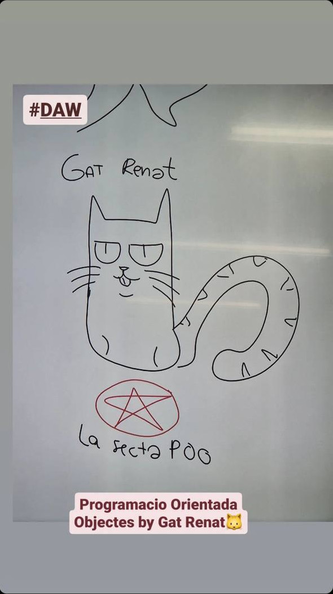

Renat.art
Potser no ho semblarà, però el gat Renat ja fa uns anys que hi volta. En tot aquest temps, molts alumnes han produït diferents creacions artístiques sobre el nostre més o menys entranyable amic.
Com diu la dita, el millor moment per recollir aquestes creacions va ser fa un parell de dècades; i el segon millor moment és ara. Així, que, comencem la recopilació:
Artista de DAW1 curs 2223
Creació trobada a la pissarra digital de l'aula de DAW1 al centre IES Joan d'Àustria de Barcelona, el 14 de febrer de 2023. Artista G.G.F., amb probables aportacions d'ornaments per part d'altres companys.
